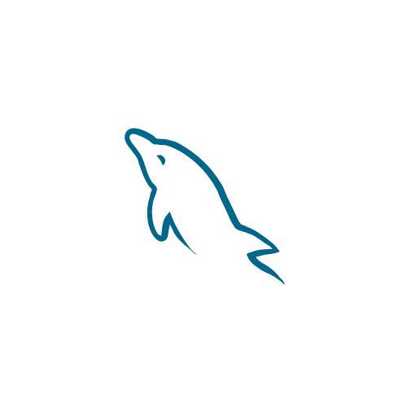

# Minhas principais stacks

Banco de dados relacionais
Olá, seja muito bem-vindo(a) a minha página pessoal. Me chamo Gilberto Fernandes e sou desenvolvedor de sistemas voltado para a WEB.
Mas, antes de falarmos sobre o profissionalismo por que não começarmos de uma forma um pouco mais pessoal.
Deixe-me contar um pouco sobre mim, sou fascinado pela natureza e adoro vislumbrar as árvores e águas correntes fluindo em muitas vezes das rochas, isso me deixa encantado. Vejo tanta complexidade e perfeição na natureza que fico inspirado em sempre buscar a organização que nela contém. Percebi que organizando cada parte da minha vida de forma individual dando um passo de cada vez poderei alcançar grandes conquistas. Então, deu para notar que gosto muito da natureza, porque ela me fala muito sobre Tecnologia. Ambas podem transformar vidas, seguindo os passos que foram estipulados os seus ambientes entrarão em equilíbrio. Desta forma, tudo fluirá para uma melhoria contínua.
Sou Brasileiro, Pernambucano arretado, amante da educação através dos estudos que tanto tem transformado a minha vida.
Busco constatimente melhorar minhas soft skills, como a comunicação, adaptabilidade, entre outras. Desta maneira, facilitando minhas interações pessoais, isso tem ajudado muito não somente na área profissional mas em toda minha vida.
Fale comigo clicando aqui